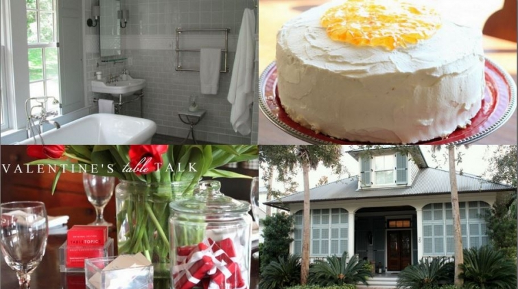

.png)
.PNG)
.PNG)
.PNG)
.PNG)
.PNG)
.JPG)
.JPG)
.PNG)
.PNG)


From the looks of things around blogland, I should have done this post two days ago, but we have been putting away all things Christmas around here – and there was a lot! Regardless, it would be a shame to start a new year without looking back at where we were in the previous year (even if I am 2 days late. 🙁 ) So with that in mind, let’s see what we talked about in 2013 at Talk of the House.
We began the year talking about Downton Abbey. Then we looked at a number of rooms done by the always talented Phoebe Howard. (I think her work was the subject of 3 entire posts here!) After that, we talked about using black and white in spaces (both inside and out), and we ended the month with the start of a series on author Jan Karon’s homes.

We started February making the delicious Orange Marmalade cake from the Mitford series. Then I wrote my first post on The Inn at Little Pond Farm – not even knowing that my husband would plan a trip there for us later in the year. (What a wonderful surprise!) We looked at a lot of spaces decorated with red around Valentine’s Day (including recipes for a few Red Velvet cakes), and the month of February ended with a series of 6 posts on our trip to beautiful and charming Beaufort, South Carolina.
 A first look at the construction of our room over the garage was given in March. Then we looked at a number of rooms decorated with green (including our kitchen.) Later that month we toured Chattooga Club in the mountains of North Carolina and then some gorgeous beach houses in Seaside, Florida.
A first look at the construction of our room over the garage was given in March. Then we looked at a number of rooms decorated with green (including our kitchen.) Later that month we toured Chattooga Club in the mountains of North Carolina and then some gorgeous beach houses in Seaside, Florida.
In April, I was in a mood for all things Southern…from my imaginary Pinterest Southern dreamhouse for spring to the almost-famous Macaroon pie from an old restaurant that was once in Macon, Georgia, to the work of local talent James Farmer, and to a visit to Georgia’s Callaway Gardens. We also did some decorating for spring around here as well.
And then came May..with a big-time craving for a beach vacation. A house on the Newport Harbor home tour gave us some great eye candy as we compared how it looked for the tour with its appearance in a magazine photo shoot. I did manage to get our daughter’s room redecorated amid my beach craving, and then it was on to sharing part of our trip to California (the Napa part.) That was followed by beach house after beach house…a California beach house, the Nights in Rodanthe beach house, an Outer Banks beach house, and finally two beach houses in Seaside, Florida. I ended the month with a personal post about three very challenging weeks in that month (and your heartfelt comments touched me deeply.)
The house craving didn’t end in May…no sirree. There was one more beach house to see in Seaside at the beginning of June. Then some real fun began. My back porch was featured at Kim’s fabulous Savvy Southern Style blog (and I got that porch organized, too!) After that, I wrote a post on the handsome and talented Stephen Saint-Onge, who totally surprised me with a comment on the post and donated books for a giveaway, and I even got to do a little Q&A with him. (Be still my heart!) More beach houses finished out the month… this time from the charming community of Watersound on the Gulf in Florida.
July was super duper busy. We decorated the porch for the 4th of July and had a hamburger bar to celebrate the holiday. We took a vacation to Amelia Island, Florida. Our sofa finally got reupholstered (despite all the rain to move it in.) We talked about tomatoes in the heat of the summer – everything from recipes to china and even a tomato wedding. I shared with you a post on how I do my lettering. Super kind Marty featured our home on her wonderful blog, A Stroll thru Life, and I shared a post about the gifted Gil Schafer with you to round out the month. And then school started… and it was August.
We started the month by talking about a pretty planned community in Alabama called The Waters, and I finally shared a tutorial with you on chalkboard lettering. Then there were seven posts on summer camp style..from homes to weddings to recipes for s’mores. We celebrated my birthday that month, and I added the Our House page to the blog (which I need to update..soon!) And I shared my new classroom with you as the final post of the month.
Labor Day weekend brought a trip to Cashiers. North Carolina and a tour of their Designer Show House. It took three posts to show it all to you! We stayed at the gorgeous Inn at Little Pond Farm, and Pinterest pinners went crazy with the rooms in the two posts on it. I also gave you a tour of some places we saw in Valle Crucis and Blowing Rock. Then we worked on updating the hardware on our bedroom furniture. One of my favorite movies, You’ve Got Mail was the subject of a post near the end of the month followed by a post on its real movie sites in NYC.
Francie Hargrove, another local talent, was featured in a post in early October. I redid the boys’ bedroom, and showed it to you in two posts. We toured the Bedford Post Inn in the middle of the month. Another of my favorite movies, On Golden Pond had a cottage I have always loved, so it made a perfect autumn post topic to share with you. I also shared one of my favorite fall meals in October (and all its recipes), and we ended the month with decorating with pumpkins and mums around the house.
We had a fall lunch out on the porch in November featuring a couple of Ina Garten’s recipes. Kathryn Greeley’s gorgeous rooms provided some eye candy for us during the month, and the holiday season began with decorating with green for Thanksgiving. And then it was time to start the busy Christmas season with a recipe for my favorite hot Christmas punch.
And then it was officially December, and I bombarded you with all things Christmas…from decorating the kitchen and dining room, to making a Christmas raspberry ribbon salad, to going on a local Christmas tour, to decorating the family room with peppermint and making a peppermint ice cream pie. If all of that wasn’t enough, I even shared Christmas decorations of our daughter’s room and our porch (and everywhere else in the house!) The month and the year ended with our home ready for New Year’s Eve.
So what were your favorites this year? In 2012, it appeared that you liked kitchens and food. This year, it appears you enjoy reading about houses. Based on the number of page views these were the top 5 posts of 2013:
#5 The Nights in Rodanthe House
#4 – A Pinterest Dream House for Spring – Southern Style
#3 – The Inn at Little Pond Farm – Part 2
#2 – The Inn at Little Pond Farm Part 1
and the#1 readers’ favorite post from 2013 was Loving Mitford: Jan Karon’s Homes.
And that was 2013. Doing this post has literally taken me all day (12 hours – no joke!), but it has been good to look back at everything. It has given me a better “whole picture” view of Talk of the House. (I wish I had done this at the end of 2012 as well.) I can see that we spend most of the year perusing the homes and decor of other people, but once late November rolls around, the posts I share from then until the end of the year are about our house. I am sure that the cycle will continue because I have a couple of posts on some decorating here planned for January, and then it is off to look at the spaces designed by talented people. So I thank you for staying with me for wherever my interests take us…whether it is an inn, a town, a designer, a home tour, a dinner, or even our own house here. I appreciate all of you.
I also want to thank my top referring sites this year.
#1 – Pinterest – that would be all of you who pin my photos that send readers here. Thank you!
#2 – Southern Hospitality Blog – Thank you Rhoda!
#3 – Hooked on Houses – Thank you Julia!
#4 – Savvy Southern Style – Thank you Kim!
#5 – Vignette Design – Thank you Delores!
I wish I could do as good a job with this blog as all of those ladies do with theirs. Unfortunately, blogging is not my full time job, but I have plans for improvement. 🙂 My New Year’s resolutions are: 1. Get the office organized so that it is more conducive to working in it. (It is quite a disaster right now.) 2. Get back to replying to emails and comments. (The last 2 months have killed me in that area.) 3. Read other blogs and leave comments. I feel so guilty about not having time for that right now.
And finally, to make up for my tardiness with this year in a review, I made the print at the top of the post for you. If you would like to print it out, right click on the image, and save it to one of your photo files. Then you should be able to print it out to whatever size you would like from there. Perhaps you will find it a good thought to keep in mind as you begin a new year.
Happy New Year!

p.s. My husband went to the doctor today, and he does not have the flu. It is… pneumonia. We are currently watching a movie – The Bucket List. 🙂


.PNG)
[…] of the tent paper and moved her to the upper right corner. Then, making an overhead transparency of this quote from Talk of the House, I was able to trace the awesome lettering with a black marker in no time at […]
Just getting caught up with the earlier posts from this year….now that I’m retired I have a lot of time to do whatever I want, but somehow I am just doing a lot of nothing!!
I loved looking at your year in pictures post Very cool! It’s neat to see that your readers share a love of the same things even though we don’t know each other. Thanks for sharing all your talents and ideas with us!!
~*♥*♥*♥*~
Chris
Great year end review. Oh some of those houses! 🙂
Looking forward to what you will be sharing with us in 2014.
Hope your husband is on the mend asap.
Oh and LOVED the New Year’s post. So pretty with the silvers and blues. Nice!!
————————————————————
I am glad you liked it Lori. 🙂 I hope we can talk about many more pretty homes in 2014. Husband is taking some pretty strong meds that have some not so good side effects worrying him, but doing well other than that.
Stay warm!
Kelly
Happy New Year Kelly from a really cold Canadian province, I mean -55 Fahrenheit. Can’t wait until Summer! Anyway, it was a pleasure reading your posts from last year as it is only in the last few months that I discovered your blog. You are seriously a great blogger that has been blessed with a talent in writing and humour and I enjoy reading each one. I will have to learn how to do calligraphy because your writing is so beautiful, makes me want to learn too! I finished doing my three chalkboards in the house. It is so fun to do and taps into some creativity. Look forward reading your next adventures in decorating, recipes, trips, etc.. Hope your husband gets back on his feet very soon.
————————————————————-
Whoa..that IS cold…and we are worried about a windchill here of 1 degree on Tuesday morning?! I suppose that would be warm to you. LOL Thank you for reading this year, and I hope you will enjoy the topics here in 2014. Way to go on your three chalkboards!
Kelly
Hi Kelly,
Thanks so much for this year in review. Since I missed a good portion of it whilst we were sailing around the world (actually only from New Zealand to South Africa for this leg) I was not able to regularly check in to your blog. Now… here it is in one fell swoop!
Sure hope you had a lovely Christmas and New Year! We were really pleased to be able to make it home for Christmas (not to mention the snow, ice and very cold temps -30 C on many days)… also great to be back in our little old house with our Great Dane – and all snuggled close to each other around the fireplace.
Take care and I look forward to enjoying more of your postings this year (we don’t head out again until October).
Hugs
Cath
————————————————————–
Welcome back, Cath!! It is so good to hear from you again. I have missed you! I hope your Christmas back home was a good one (and I am glad you made it back home safely.) Enjoy that fireplace. We are having a major cold spell here in the next few days…with even a prediction of perhaps a little “white stuff” here. (Crossing my fingers!)
I look forward to your comments here in 2014. 🙂
Kelly
Enjoy everything you post on your blog, and wish you and your family a heathy, happy 2014. Keep hot tea with honey offered to your husband. Great recap of 2013. Your students are lucky to have you as their teacher even though I know some days you probably just shake your head. Retired after thirty-seven years,, elementary and middle school. Smile each morning as the school bus passes our house.
————————————————————-
Sandy I laughed out loud at your smiling when the school bus passes your house. I am looking forward to a day when I can do the same. Thank you for reading the posts and leaving comments this year. My husband is not a hot tea drinker at all, but he is trying to drink a good bit of water since they recommend a large amount of liquids.
Best wishes for you for the new year!
Kelly
Just found your blog and spent the last two days reading it! You’ve inspired me to order a calligraphy kit and…who knows?…I just may start doing some blackboards for my new grandson!
———————————————————–
Well I am so glad you found the blog Liz! (And that it could provide some reading material for a couple of days. ) I love that you have ordered a calligraphy set. Practice practice practice says this teacher! It will be fun.
Kelly
Love every picture and every post. Enjoyed every one of them. Hope you hubby gets better soon!!!
————————————————————
Oh you are so sweet, Kaye Ann. I am glad you have enjoyed the blog this year. Thank you for taking the time to read and comment. And thanks for the get well wishes for my husband.
Kelly
Phew! That post made me tired just reading it! Ha! You sure packed a lot into this year. Thanks for taking the time and care to make this such an enjoyable spot to visit. I enjoy all your posts, but my favorites are still always the ones about your own home and style.
Hope your husband feels better soon!
———————————————————–
I did get a lot in this year, but there were a number of posts that I had planned to do that I never found the time to get in. Hopefully I will be able to get them all in this year. My brain spins faster than I can type! Thank you for the compliments on our home.
Kelly
WOW…. “Reviewing” your year in review reminds me why I LOVE YOUR BLOG SOOOO MUCH…. I soooo enjoy the house tours… especially your own house updates!!! Love the food posts ( made the Raspberry ribbon salad for the family Christmas Dinner meal… BIG BIG HIT!!)
Downton Abby always a fav…. lol!!! Excited to see what you are up to for 2014!!! Thank you for taking the time to be share!!! Happy New year!
————————————————————
Happy New Year to you too, Terri! So glad your family liked the raspberry ribbon salad. (It is almost a dessert to me! ) Thank you for taking the time read all the posts here this year.
Kelly
Hi Kelly,
I absolutely love your Blog! Everything about it, from your layout and the stories and pictures you share. Keep up the good work.
Have a happy and healthy 2014!
Sincerely,
Cyndee Jones
————————————————————–
Thank you so much for your words of encouragement, Cyndee! I appreciate them. I hope you have a happy and healthy year as well.
Kelly
Wow, that is a lot of posting Kelly. I have only been here since October and just love your shares. I’m so glad I stumbled upon your blog. Here’s hoping your husband has a speedy recovery. My son is still coughing but on his way to Colorado and now this momma has a cough too. He unfortunately did not get himself to the doctors, so I am a bit nervous. Kids! Ugh!
Debra
———————————————————–
It does look like a lot; doesn’t it Debra? But there are so many bloggers out there who post daily, and I just can’t fathom how in the world they are able to do that. I am glad you stumbled on Talk of the House too! I hope you and your son are both over your cough, and that he is enjoying his trip to Colorado. There seems to be quite a bit of the flu in our area.
Stay well!
Kelly
Kelly, Happy New Year! Beautiful layout of your “year in review”. It was a great year of posts. I thank you for all the time you put into your blog. It’s always such a blessing to read. Praying your hubby is better soon and that you stay healthy. God Bless! Patty
———————————————————–
You are more than welcome, Patty. Although it took a long time to put the post together, it will actually help me in my forgetfulness when I start asking myself, “Have I already done a post on this?” LOL Thank you for the prayers for my husband. I don’t think he is resting like he is supposed to be doing, but men are never good patients when it comes to being sick.
Stay warm!
Kelly
Wow! Thanks you so much for your review! As I stumbled over your blog just in November (and loving it!) I realized I still have a lot of posts to read from last year. And I’m really looking forward to that! And I am also looking forward to the new ones this year will bring!
Kelly, I wish you and your family a great New Year and all the best for 2014!!! And I hope your husband gets well soon!
————————————————————-
Thank you so much Michele! I’m glad you liked the year end review. It’s sort of a “Cliff Notes” version of this year’s blog posts. Happy reading!
Kelly
What a great idea to review what you had blogged about each month! I so enjoyed reading them again especially the blog in May about the California beach house as we stayed three days in the cottages in Carpinteria and enjoyed it very much. Would never have known about them if you had not blogged about them, so many thanks. Hope your husband feels better soon and Happy New Year to you, Kelly, and your family, Lindy
————————————————————
Oh I am jealous, Lindy! How wonderful to get to stay at the cottages in Carpinteria! They looked so very cute. Maybe we will make a trip there one day.
Kelly
Wow! Lots of fun posts!!! My favorite thing you blogged about this year was how to do your style of lettering. I have copied it over and over. I also loved seeing your house and how you decorate it for each season or holiday. I have gotten great ideas. My third favorite thing you posted about was all of the beach houses…especially those in Seaside and Watersound. (Some of my gfs and I actually drove through those areas while in Florida in the fall.) Try to get some rest this year!
————————————————————-
Kathy, I am so glad you liked the lettering posts and have been able to use them. Those posts took the most time of any I did last year. And ahhhh…the beach houses… there are sooo many beautiful ones out there. You were lucky to be able to visit some of those areas last fall.
Kelly
I found your blog about half way through the year and just love it. I’m still a small blog myself, but I know what you mean about wanting to improve and veg better. There is so much to learn. Thanks for sharing your home with us. I love all the ideas I get from you. I have lots of DIY projects for the house for my blog this year. Hope you drop by for a visit. Sorry your hubby isn’t feeling well. Praying for his healing and for you as you head back to school soon.
———————————————————–
Thank you Jayne. I am so glad you found the blog and that you are able to take my ideas and make them work for you and your family. I hope to get around to reading more blogs this year. (I miss having the time to do that!) Thank you for your prayers for my husband. He is not a good patient! 🙂 I go back to work tomorrow. Can you believe that?! Hope 2014 is your best year yet!
Kelly
Kelly, thank you so much for all of the wonderful posts and all of the time that you have put into your blog. It has been a real joy to read and follow you! Blessings to you, and your family, in 2014~
————————————————————-
You are more than welcome, Susan. It is a joy to share all of this with such sweet readers like you! Blessings to you and yours for the new year, as well.
Kelly
What a year! I must confess that when I was looking at the pictures in your review, my favorites are still always your beautiful home. Thanks for an inspiring year!
————————————————————-
You are too kind, Barb! (But I am glad you like our home. :)) Thank you for following along with all the posts.
Happy New Year to you!
Kelly
Whoa…how fun to read this recap of ALL the great places you have taken us,the yummy recipes you have shared (peppermint pie and sunshine punch are just a few of the keepers!!!),the seasonal decorating tips you have inspired us with and the rooms….ahhh….some of the prettiest rooms I have ever seen!!!! Kelly, I truly mean this when I say you have the BEST blog in blogland!!!!! Thank you so much for sharing with us!!! …and please do not feel bad about commenting on your comments….I already think you must never have time to sleep! Happy 2014!
————————————————————–
Oh Kathrina, thank you thank you!! Nope there is never time to sleep around here (unless you happen to be in the age bracket between 16 and 26!) Happy 2014 to you, too! I am crossing my fingers for snow here this year. 🙂 (always my new year hope.)
Kelly
This was a fun trip through 2013. I really enjoyed seeing Kathryn Greeley’s work this year, but my favorite is seeing your home and the lovely, creative things you do .Your blog is great and I look forward to 2014 and more wonderful posts. Take care of your husband, two years ago my husband had pneumonia and it took him forever to get well.
————————————————————-
Weren’t Kathryn Greeley’s rooms gorgeous? And to think that they are in the mountains of North Carolina makes them even more beautiful to me. Thank you for the sweet comments on our home. I appreciate the compliments very much! Pneumonia is not a fun thing to deal with, and my husband is rarely sick. So he is not very good at “resting.”
Kelly
Whoa–what a whirl wind ride through the year!! I felt like I was in a Time Machine or a flying carpet looking down on all our adventures!! What a year– what a blog– and what a good friend in Blog Land! Thank you for the hard work, interesting topics and new learning experiences you have shared with us! I love to wander wherever your mind and heart leads! Thank you for all the trips you have taken us on— 2014?? — Wonder where we will wander this year? Take care of hubby and get some much needed rest, Kelly!!
————————————————————-
It was a whirl wind for me writing it too! Kind of like doing a scrap book for the entire year (without using scissors and glue!) Thank you for coming along on all the adventures Louvina, and thank you soooo very much for always leaving such encouraging comments. I wonder where we will go this year, too. When my husband was at the doctor today, he asked him if putting polyurethane on the new floors was considered “rest.” (And he was sincere in asking!) Of course they said that was not “rest.” 🙂
Kelly
Pneumonia…ack! Glad your husband saw a doctor. Not something to mess with. It threw me for a loop when I had double pneumonia a couple years ago. Hope he has a speedy and full recovery.
—————————————————————
Double pneumonia..you must have felt AWFUL (and coughed a lot!) Thank you for the get well wishes. Our oldest child had it many years ago, and I remember how long it took him to get over it and get his energy back. The flu might actually have been better.
Kelly
Kelly,
Thanks for the year in review. I love seeing all the things that inspire you, where you go, how you decorate and what you cook or bake. You have been a part of our family this year as well. I made the orange marmalade cake for my Mom’s birthday and the peppermint ice cream pie for Christmas dinner. I will also be putting Hershey kisses on my students desk so when they walk in Monday morning sleepy they will feel welcome and loved! Keep up the great “job” you do on the blog and keep us posted as usual! Happy and healthy New Year! I hope hubby gets well asap and everyone else stays healthy!
————————————————————
That is so funny that I have “been a part of your family” this year! I am happy to know that you use some of the ideas you read about on here. We are back to work TOMORROW. Ugh. (But the students do not come until Monday.) Still 3 more days would have helped tremendously.
Enjoy your holiday!
Kelly
Kelly, I just want to take the time to “thank you” for all the hard work that you do on your blog. I know it takes a lot of time and effort for such wonderful post. As a follower from the beginning, I just want you to know that I really appreciate all the thoughtful, detailed post. Happy New Year!!
———————————————————–
Oh my goodness! You are welcome Vickie. I thank YOU for reading (and commenting! 🙂 )Happy New Year to you, too.
Kelly
It’s been a busy year, Kelly. Thank you for all of the beautiful inspiration and wishing you all the best in 2014!!
———————————————————–
Oh my, yes it has! Thank you for reading the posts. All the best to you for the new year too!
Kelly
Wow Kelly, I’ve been following along for a while now, but seeing your year end review makes me want to go back and read it all over again!
————————————————————
Sharon, I think that would take quite awhile! But thank you for following along with all the posts. 🙂 I want to print them all out so that I have a paper copy in case I should crash my computer or something disastrous like that.
Kelly
Loved seeing your Year in Review as I so enjoyed each of the things you featured..I always look forward to your reviews on great getaways and designer features..and then there are the fabulous posts on your home projects!…Looking forward to 2014!
————————————————————-
Thank you Shirley. I am glad you enjoy the range of subjects! I guess I kind of have an attention deficit disorder when it comes to choosing topics. LOL
Kelly